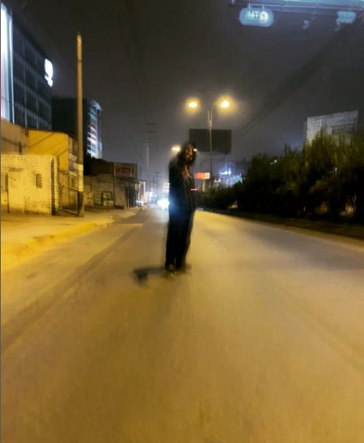
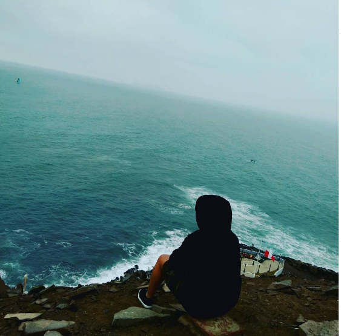
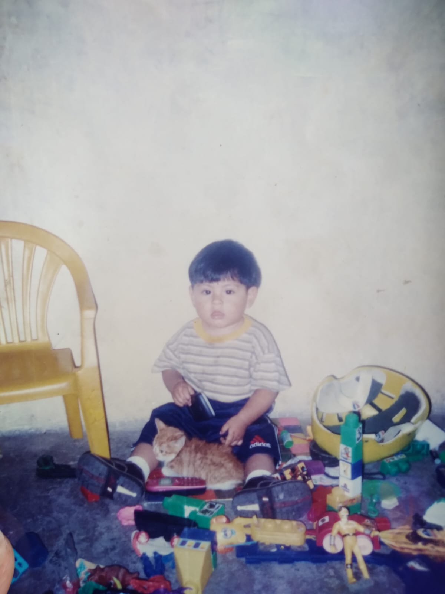
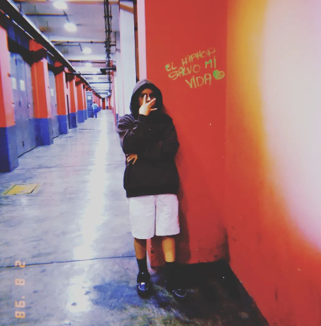
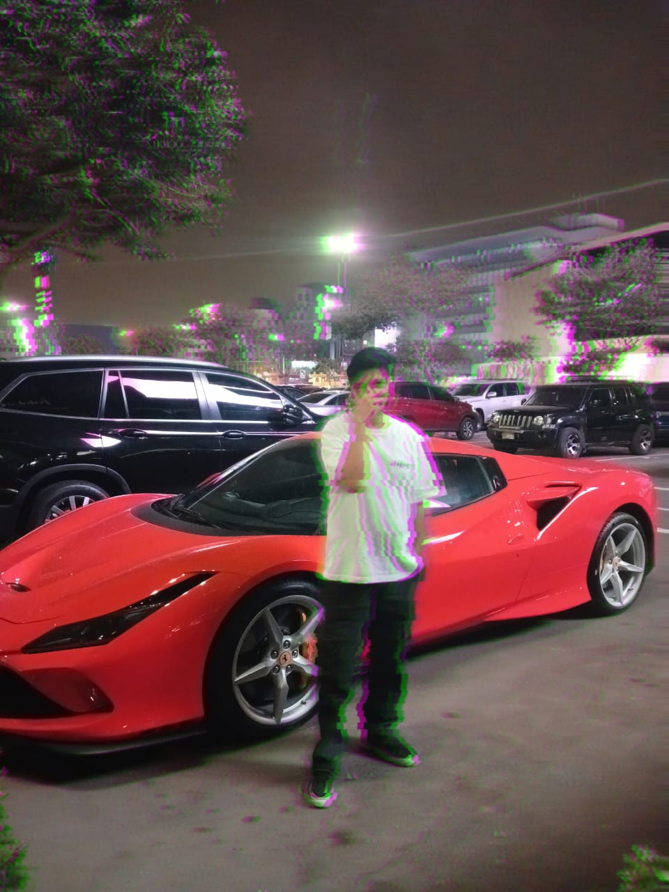

Historia
En el vibrante corazón de Perú, nació un alma creativa que estaba destinada a cambiar el panorama de la moda urbana. Jhordy Luis Carrasco Paisig, un visionario nacido el 31 de Agosto del 2002, abrazó desde temprana edad la cultura del hip hop peruano y encontró en la moda una forma de expresión única y auténtica. Su personalidad carismática y estilo inconfundible lo llevaron a destacar en cualquier multitud, convirtiéndolo en un verdadero ícono del flow urbano.
Desde pequeño, Jhordy entendió que la ropa no era solo una forma de vestir, sino una extensión de la personalidad y una declaración de identidad. Sus elecciones de vestimenta eran un lienzo en blanco que le permitía contar su historia al mundo sin decir una palabra. A medida que crecía, la pasión por el hip hop y la moda se entrelazaron en su corazón, convirtiéndose en la base de su vida y motivación para el futuro.
Con los años, Jhordy exploró las calles de Lima con curiosidad y determinación, encontrando inspiración en los grafitis, la música, los movimientos culturales y las vibraciones únicas de su ciudad. Cada día, sus ideas y creatividad florecían, y con ello nacía un sueño ambicioso: crear una tienda de ropa que reflejara su pasión por el hip hop, la cultura urbana y la autenticidad.
Y así, a pocos meses del lanzamiento, el mundo se prepara para recibir a "Jhordy Store". Una tienda de ropa virtual que busca plasmar el estilo, la actitud y el espíritu revolucionario que siempre caracterizaron a Jhordy Luis Paisag. Cada prenda cuidadosamente seleccionada es una extensión de su alma, diseñada para empoderar a todos aquellos que buscan un estilo genuino y audaz. Jhordy Store no es solo una tienda, es un tributo a la cultura urbana que ha dado forma a la vida de Jhordy. Cada prenda lleva consigo la esencia del hip hop peruano y el corazón de un joven soñador que lucha por dejar su huella en el mundo.
.png "Imagen Referencial")
La espera está a punto de llegar a su fin, y la emoción en el aire es palpable. Jhordy Store está a punto de abrir sus puertas virtuales para compartir su visión única con el mundo entero. El legado de Jhordy Luis Paisag, la pasión por la moda urbana y el espíritu del hip hop peruano se fusionan en esta tienda, lista para recibir a todos aquellos que buscan hacer una declaración auténtica y vibrante a través de su estilo. ¡Prepárate para un nuevo capítulo en la historia de la moda urbana, prepárate para Jhordy Store!
Propuestas de logos:
Mensaje del joven diseñador:
"Mi nombre completo es: Jhordy Luis Carrasco Paisig y voy a tener una marca de ropa, esta idea nació a los 14 años cuando empecé a vestirme por mi mismo ya que antes solía dejar que me visitieran mis padres, debido a q tenían sus tiendas de ropa ( jeans, camisas, shorts y polos) un día empecé a escuchar raperos de NY y me gustaba la ropa q usaban, esa moda y más, primero empecé con las zapatillas, recuerdo q me demoraba todo un día para escoger 1 zapa jsjsj. Me di cuenta qué yo solo tenía q crear mi propia ropa ya q la ropa q vendían mis padres no me gustaba, osea no es q sea fea, al contrario esos tipos de prendas eran tendencia en Perú pero como q a mi no me llamaba la atención, empecé a cortar mis jeans y claro no me quedaba tan bien, debido a q necesitaba una maquina y así, no estaba tan informado sobre el tema pero hacía mis creaciones, siempre me gustó vestirme bien, ya q mis padres se vestían de una manera muy elegante y presentable y no les gustaba vestir mal, desde los 14 años empecé a crear, a imaginar, a soñar con algún día tener una tienda, y se preguntaran porq no la tengo aún o estudio algo relacionado a la moda y es porqué caí en una fuerte depresión debido a ciertos problemas en mi vida de la cual casi ni logro salir >y hasta pensé en la muerte pero aparecieron mis mejores amigos(hermanos) y me dieron ese apoyo q necesitaba, hoy tengo 21 años y el sueño sigue en pie, poco a poco ya voy rogresando y estoy seguro de qué lo voy a lograr y apoyaré a todos mis amigos en sus proyectos ya q les debo la vida, a ellos y a mi madre qué nunca me abandono:') Es bueno soñar pero ten cuidado de quedarte dormido :') "
